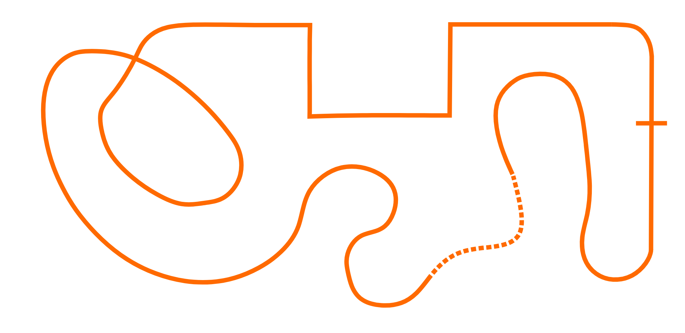
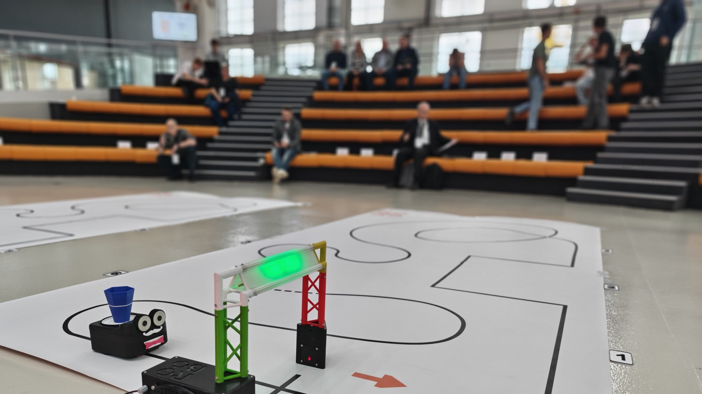
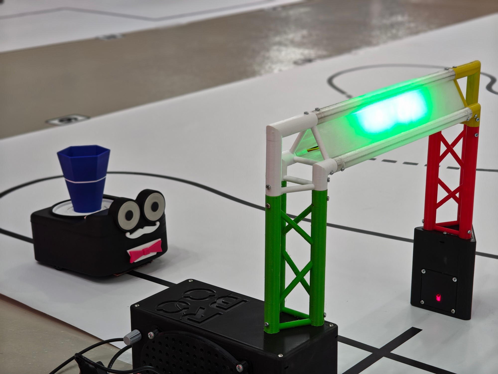
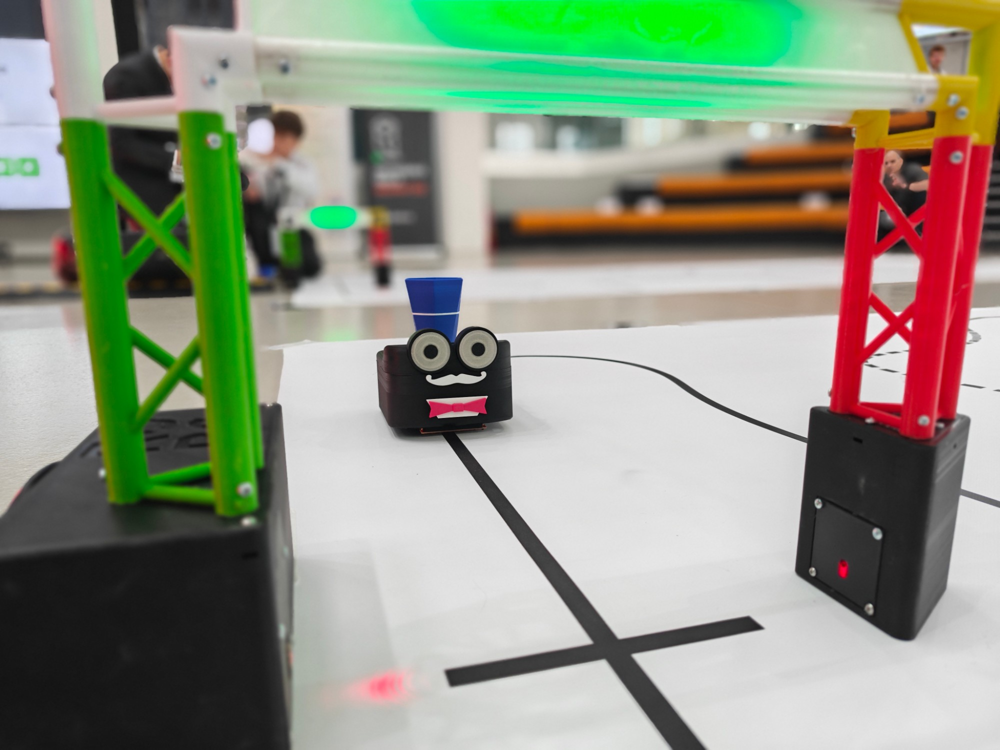
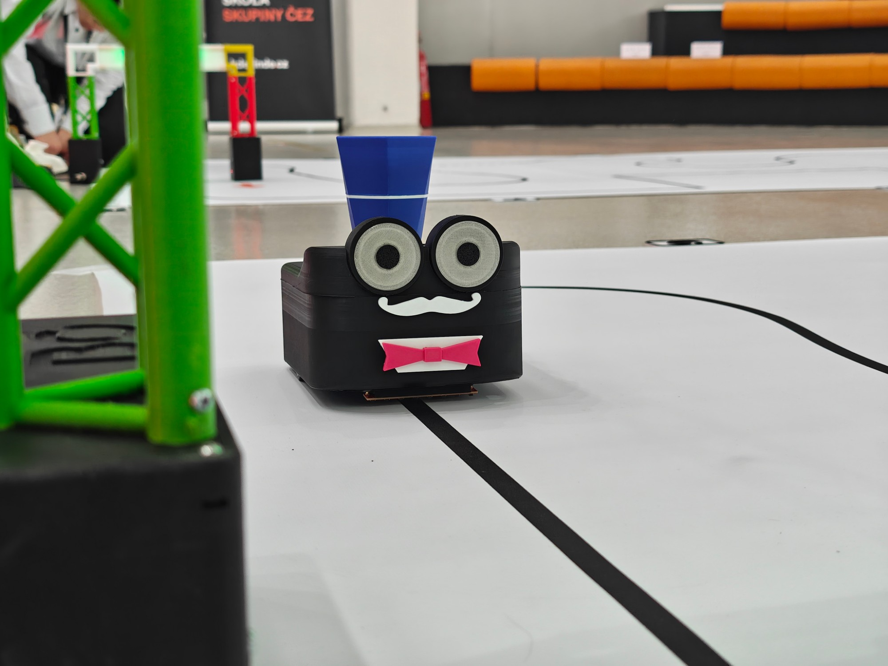
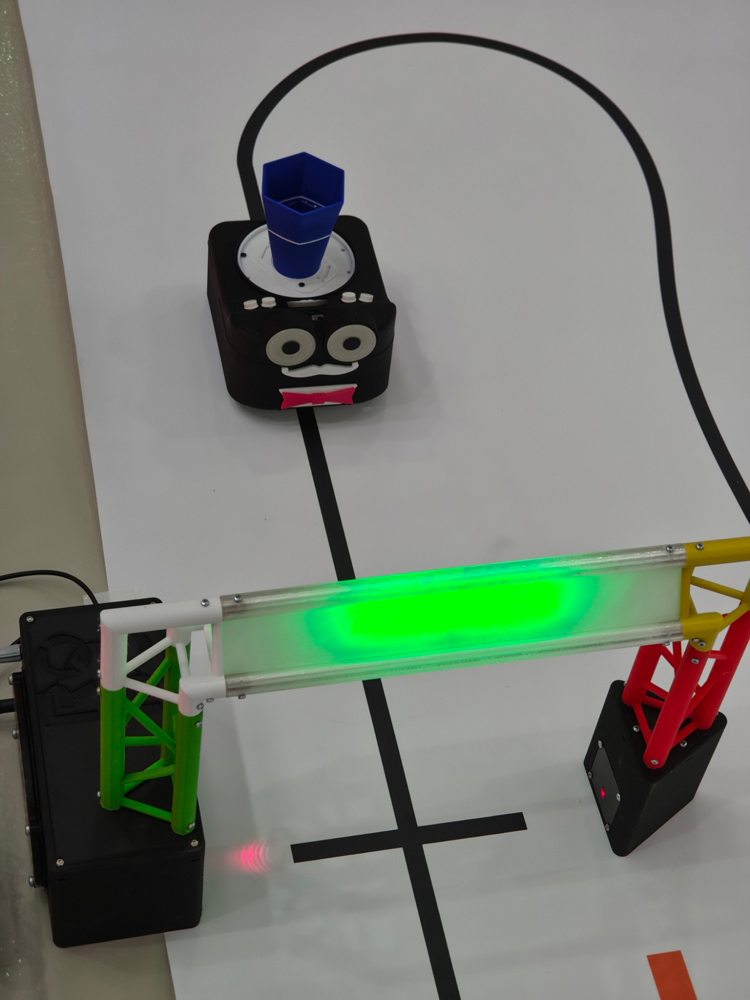
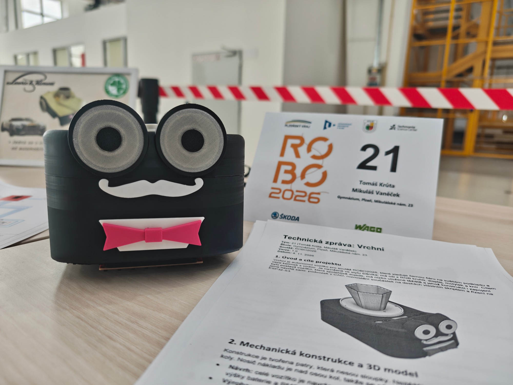
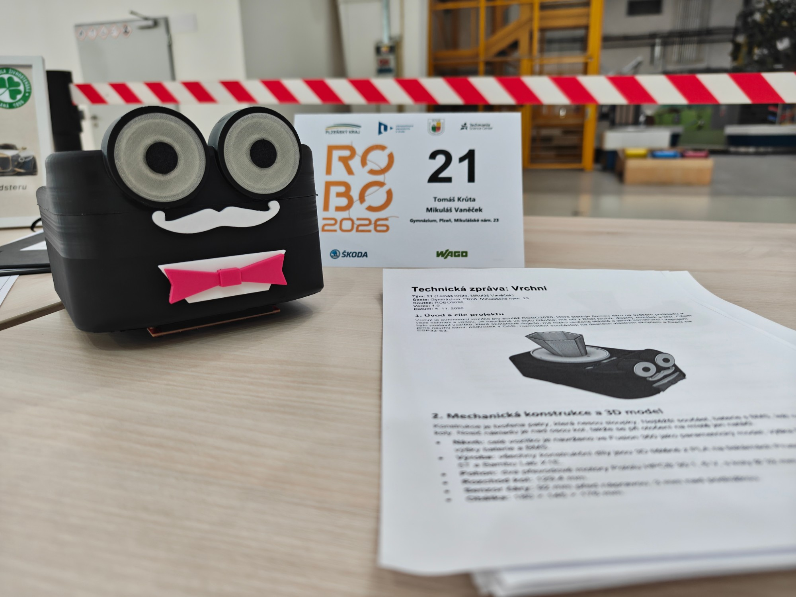
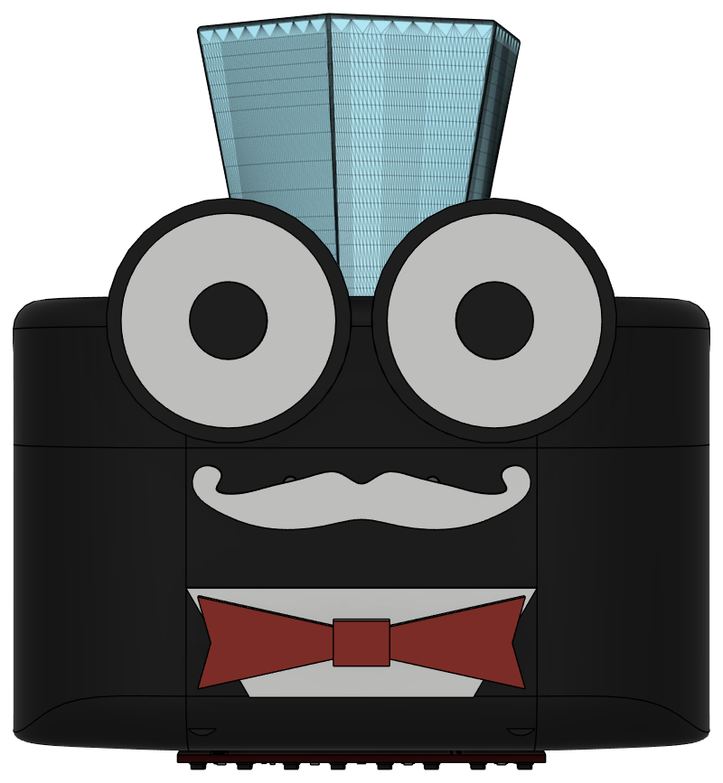
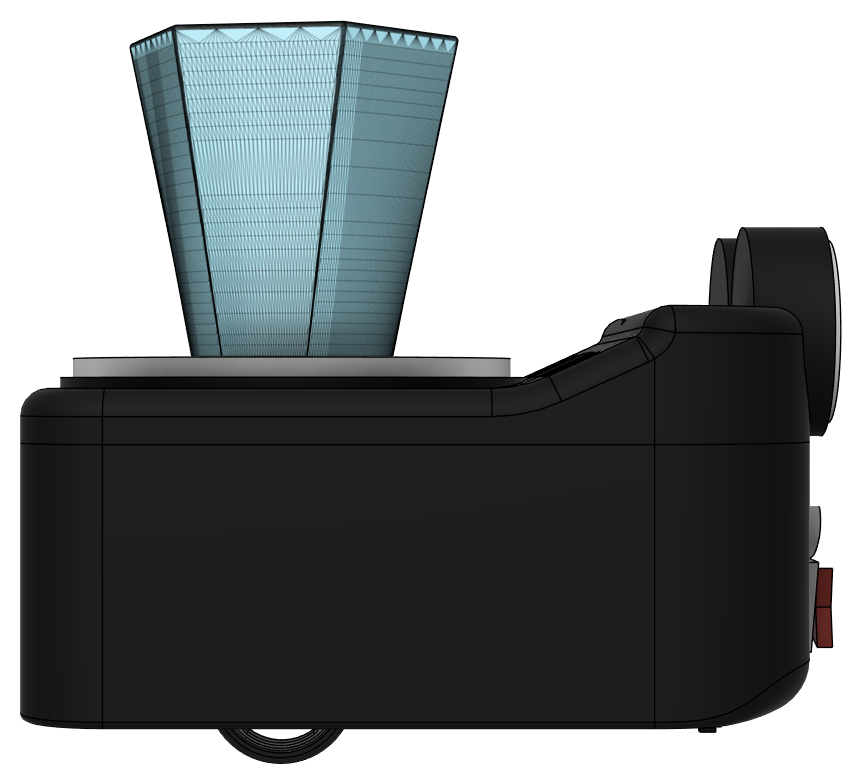

ROBO2026, Techmania Plzeň
Vrchní
- 13. místo za design
Autonomní vozítko, které sleduje čáru a veze kelímek se 70 ml vody. Kryt jsme navrhli jako číšníka s očima z RGB LED, knírem a motýlkem.
- Akce
- ROBO2026, Techmania Plzeň
- Datum
- 4. 11. 2026
- Tým
- Tomáš Krůta, Mikuláš Vaněček
Soutěž
ROBO2026 pořádal Plzeňský kraj spolu se ZČU, SOUE Plzeň a Techmanií. Přijelo 38 týmů z celé republiky, třeba i z Prahy. Úkolem bylo postavit autonomní robotické vozítko, které co nejrychleji projede vyznačenou trať a poveze přitom kelímek s vodou, aniž by ho vylilo. Porota kromě jízdy hodnotila i design a prezentaci.
Na stavbu jsme měli málo času. Teď už víme, co čekat, takže příští rok začneme mnohem dřív.
Návrh ve Fusion 360
Vozítko je složené po patrech. Dole je základová deska s motory, senzorem čáry a baterií, nad ní na sloupcích deska s elektronikou, nahoře podnos na kelímek a přes všechno kryt.
Hodně jsme řešili rozložení váhy. Baterie leží co nejníž mezi koly a kelímek stojí přímo nad osou kol. Když se vozítko otáčí na místě, kelímek se jen pootočí a voda nedostane boční ráz.
Model je parametrický, takže třeba výška desky s elektronikou se dopočítá z výšky baterie a BMS. Kolize mezi díly jsme kontrolovali skriptem přes Fusion API.
Celý kryt by se i s podporami tiskl 8 h 37 min. Rozdělili jsme ho na stěny (2 h) a střechu s očima a displejem (5 h), které se tiskly zároveň na dvou tiskárnách. Díly drží pohromadě šrouby M3 v zatavených mosazných insertech. Tiskli jsme z PLA na Prusa Core One+, Prusa XL 5T a Bambu Lab X1E.
Elektronika a zapojení
Elektronika je na dvou univerzálních deskách. Na hlavní jsou ESP32-S3 a driver motorů DRV8833 v paticích a periferie se připojují přes konektory JST XH. Menší deska se stará o napájení.
Napájení jsme rozdělili do samostatných větví. Motory jdou přímo z baterie, 5 V napájí ESP32 a oči a 3,3 V jen analogový senzor a displej. Rušení od motorů a LED se tak nedostane do měření čáry.
- 2× 18650 (2S, 6 až 8,4 V) → BMS 2S 20 A → svorky WAGO (nabíječka IP2369 přes USB-C, XT60)
- vypínač KCD1 → motory přes DRV8833
- step-down 5 V → ESP32 a oči (přes diodu 1N5819)
- step-down 3,3 V → senzor QTR-8A a OLED
Rozvržení vodičů na deskách nám vygeneroval a zkontroloval vlastní skript v Pythonu. Hlídá zakázané piny, sítě a kolize.
- Baterie (VBAT, 6–8,4 V)
- 5 V
- 3,3 V
- Signál z ESP32-S3
Schéma se dá posouvat do stran.
- Baterie (VBAT, 6–8,4 V)
- 5 V
- 3,3 V
- Signál z ESP32-S3
Součástky
| Součástka | Počet | K čemu slouží |
|---|---|---|
| Waveshare ESP32-S3 DevKit N8R8 | 1 | Řízení vozítka |
| DRV8833 | 1 | Driver motorů |
| Pololu HPCB 30:1 6 V | 2 | Motory s převodovkou |
| Kola Pololu 32 × 7 mm | 2 | Pohon |
| Držáky motorů Pololu | 2 | Uchycení motorů |
| Opěrné kolečko | 1 | Třetí bod opory |
| Pololu QTR-8A | 1 | Senzor čáry |
| Článek 18650 2000 mAh | 2 | Baterie 2S |
| BMS 2S 20 A | 1 | Ochrana baterie |
| IP2369 | 1 | Nabíjení přes USB-C |
| Vypínač KCD1, XT60, 2× WAGO | 1 | Rozvod napájení |
| Mini step-down 5 V a 3,3 V | 2 | Napájecí větve |
| OLED 1,3" SH1106 I2C | 1 | Displej |
| Kroužek WS2812 | 2 | Oči |
| Tlačítka | 4 | Ovládání |
| Pasivní součástky | - | 1N5819, 330 Ω, 470 µF, 2× 220 µF, 100 nF |
Firmware
Program je v C++ (Arduino framework) v PlatformIO. Běží na FreeRTOS a je rozdělený mezi obě jádra ESP32-S3. Na jádře 1 běží s nejvyšší prioritou řídicí smyčka, kterou každou milisekundu probouzí hardwarový časovač. Na jádře 0 běží USB konzole, LED a displej.
Všechny nastavitelné parametry (piny, směry motorů, Kp, Kd, střídy, časování úseků trati) jsou v jedné tabulce. Přes konzoli je jde číst, měnit a ukládat do NVS, takže se nemusí znovu nahrávat program.
Piny kontroluje už překladač: žádný GPIO dvakrát, žádné piny pro USB, flash a PSRAM a senzor jen na ADC1. Stejné kontroly proběhnou i při změně pinu za běhu. Průběh jízdy se ukládá do PSRAM a jde vyexportovat jako CSV. Na OLED se zobrazuje osm hodnot ze senzoru jako sloupce a oči hrají duhovou animaci.
Řízení jsme navrhli takto. Z normalizovaných hodnot senzorů se spočítá poloha čáry jako vážený průměr, kde xᵢ je poloha i-tého senzoru:
p = Σ nᵢ·xᵢ / Σ nᵢ, xᵢ = (i − 3,5) · 9,525 mm
Na polohu reaguje PD regulátor s filtrovanou derivací a rozjezdovou rampou. Motory jsou na 6 V, ale baterie má až 8,4 V, proto je střída omezená podle aktuálního napětí:
u = Kp·p + Kd·ṗ, duty = min(u, 6 V) / U_bat
Trať je rozdělená na úseky: mezera, křižovatka, roh s otočkou na místě, cíl a ztráta čáry, kdy vozítko zastaví.
Co bylo těžké
- Díly jsme objednali asi deset dní před soutěží a poslední balík s driverem přišel jen 2 dny před ní, takže na přeměření a úpravu modelu zbylo málo času.
- Rozložení pinů jsme několikrát měnili. Příští rok použijeme Teensy 4.1, abychom měli víc pinů.
- Špatně jsem navrhl držák opěrného kolečka, takže jsem ho musel řezat a vrtat, aby bylo kolečko ve správné výšce. Motýlek a knír navíc nedržely, tak jsem je musel k sobě přitavit filamentem páječkou.
- Nejtěžší bylo všechno stihnout a nakonec jsme to nestihli. Potom jsem nějak odpálil regulátor v ESP a neuměl jsem krimpovat konektory.
Galerie




















Plánujeme dál
- Začít mnohem dřív.
- Přejít na Teensy 4.1, abychom měli víc pinů.
- Možná koupit druhý senzor, abychom jich měli 16.
- Využít enkodéry, které už máme nainstalované.
- Udělat paměť trati.
- Zkusit dát kelímek níž a postavit ho na gimbal.
- Navrhnout vlastní PCB, abychom měli méně pájení, menší riziko zkratu a spojení obvodů a vozítko bylo kompaktnější.
- Déle ladit a mít víc verzí všeho: 3D modelu, PCB i softwaru.
- Udělat si webové rozhraní jako nejlepší týmy.